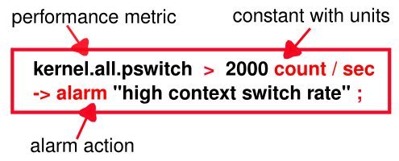
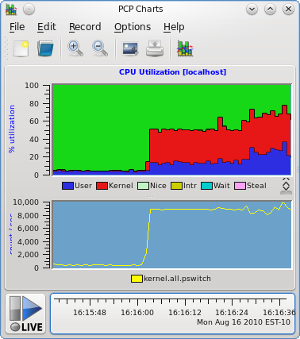
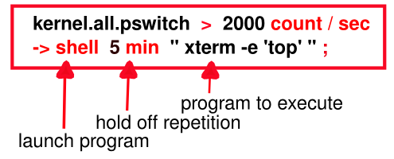
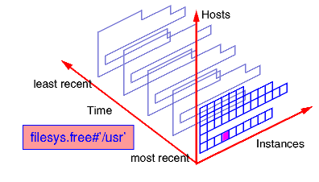
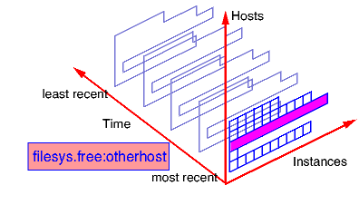
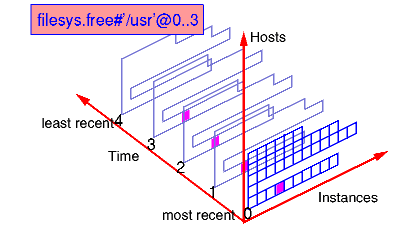
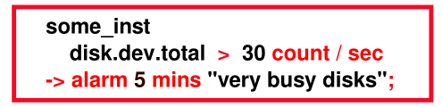
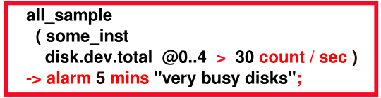
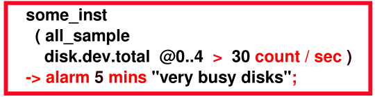
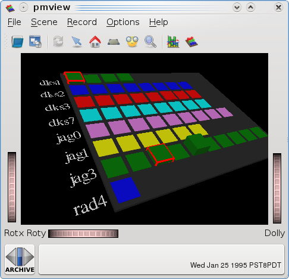

Home · Charts · Time Control
|
|
Home · Charts · Time Control |
|
For many systems, the performance data is produced in volumes and at rates that require some sort of automated and intelligent filtering by which the mundane data can be removed from the interesting information.
Once interesting information has been found, there are a variety of actions that may be appropriate.
The Performance Metrics Inference Engine (pmie) is the tool within PCP that is designed for automated filtering and reasoning about performance.
For an explanation of Performance Co-Pilot terms and acronyms, consult the PCP glossary.
pmie evaluates a set of assertions against a time-series of performance metric values collected in real-time from PMCD on one or more hosts or from one or more PCP archives.
For those assertions that are found to be true, pmie is able to print messages, activate alarms, write syslog entries and launch arbitrary programs.
Typical pmie usage might include:
The simplest rules test thresholds and are formed from expressions involving performance metrics and constants. For example, the following statement:
If the context switch rate exceeds 2000 switches per second
then activate an alarm notifier
may be translated into the following pmie rule:

where the "alarm" action launches an information dialog with the specified message.
Other pmie actions are discussed later in the Actions and parameter substitution of predicate context section.
|
 |
Sometimes it is useful for an action not to be repeated for a time. For example, the English statement:
If the context switch rate exceeds 2000 switches per second
then launch top in an xterm window
but hold off repetition of the action for 5 minutes
may be translated into the following pmie rule:

Note the shell keyword introduces an arbitrary action in which any program can be launched.
Each pmie rule may be evaluated over a set of performance metric values.
Conceptually these sets of values are constructed for a single performance metric by taking the cross product of observed values over the three dimensions of: hosts, instances and times.
The default host is:
By default, a metric name represents the set of values formed by the cross product of the default host for pmie, all instances and the current time. If there is only one instance, then the set contains a singular value.
For example filesys.free is the most recent set of values for the amount of free space on every mounted file system on the default host, and may be represented by the shaded rectangle in the following figure:

One or more suffix of the form #instance (where instance is the external instance identifier) after a metric name restricts the set of values on the default host for pmie, to the nominated instances and the current time. If instance includes any special characters then it should be enclosed in single quotes.
For example filesys.free #'/usr' is the most recent value for the amount of free space on the /usr file system on the default host, and may be represented as follows:

One or more suffix of the form :hostname after a metric name changes the set of values to include all instances on the nominated hosts, at the current time.
For example filesys.free :otherhost is the most recent set of values for the amount of free space on every mounted file system on the host otherhost, and may be represented as follows:

A suffix of the form @N..M after a metric name changes the set of values to be that formed by all instances on the default host for pmie, at the sample times N, N+1, ... M back from the current time.
And finally more than one type of suffix may be used to control enumeration in each of the three axis directions.
For example filesys.free #'/usr' @0..3 refers to the default host, restricts the instances and enumerates the time. This may be represented as follows:

The predicate some_inst expr is true if there is some instance of a metric that makes expr true.
Existential quantification over hosts and consecutive samples is also supported by some_host expr and some_sample expr.
For example, the English statement:
if some disk is doing a lot of I/O
then launch a visible alarm
may be translated into the following pmie rule:

The predicate all_inst expr is true if expr is true for every instance of a metric.
Universal quantification over hosts and consecutive samples is also supported by all_host expr and all_sample expr.
Quantification predicates may be nested.
For example, the English statement:
if for every one of the last 5 samples,
some disk (but not necessarily the same disk) is doing a lot of I/O
then launch a visible alarm
may be translated into the following pmie rule:

Note that reversing the nesting of the universal and existential predicates produces a rule which has slightly different English semantics, namely:
if the same disk has been doing a lot of I/O
for every one of the last 5 samples,
then launch a visible alarm

The predicate N%_inst expr is true if expr is true for N percent of the instances of a metric.
Percentile quantification over hosts and consecutive samples is also supported by N%_host expr and N%_sample expr.
For example, the English phrase:
if at least 30% of the disks are doing a lot of I/O
then launch a visible alarm
may be translated into the following pmie expression:
Instance quantification: match_inst, nomatch_inst
Value aggregation: avg_inst, sum_inst, avg_host, sum_host, avg_sample, sum_sample
Value extrema: min_inst, max_inst, min_host, max_host, min_sample, max_sample
Value set cardinality: count_inst, count_host, count_sample
Trends: rising, falling, rate
These predicates are discussed in depth in the pmie manual page.
pmie expressions are very similar to the C programming language; especially with regard to arithmetic, relational and Boolean operators, and the use of parenthesis for grouping.
The pmie language allows macro definition and textual substitution for common expressions and metric names.
// Macro for later use ...
bc = "buffer_cache";
// Using the above macro
// If the buffer cache is in use (more than 50 read requests)
// with hit ratio less than 90%, then popup an alarm
$bc.getblks > 50 && $bc.getfound / $bc.getblks < 0.9
-> alarm "poor buffer cache hit rate";
All calculations are done in double precision, where default units are bytes, seconds and counts. Note that this can sometimes cause surprises:
mem.freemem > 10;
will always be true, unlike
mem.freemem > 10 Mbyte;
Metrics with "counter" semantics have their units, semantics and values converted to rates. For example, the metric network.interface.total.bytes measures the number of bytes passed across all of the configured network interfaces. The metric is a counter and the units are bytes. If pmie finds the value of network.interface.total.bytes to be 10000 and 15000 on consecutive fetches 5 seconds apart, then the pmie expression
kernel.interface.total.bytes;
would have the value 1000 and the units of bytes/second.
The available pmie actions are:
Within the arguments that follow the action keyword, parameter substitution may be used to incorporate some context from the predicate in the arguments to the actions. For example, when using some_host or some_inst in a predicate, it is most helpful to know "which hosts" or "which instances" made the condition true.
The following substitutions are available:
In this exercise, we shall use pmie to investigate performance from a PCP archive.
|
 |
This is easy, which is good. However, consider the situation where we have a large number of separate archives, possibly collected from different machines and with different disk configurations. We'd like to be able to quickly process these archives, and filter out the extraneous information, to focus on those times at which the disks were busy, how busy they were, etc.
$ pmie -t 5min -a pmie/babylon.perdisk < pmie/disk.pmie Copy the configuration file and extend it by adding new rules to report different messages for each of the following:
Use the pmie/babylon.perdisk archive extracted earlier to cross check your rules as you add each one. |
When all else fails, the solution is at pmie/answer.pmie.
As a final exercise, investigate the effects of using different update intervals on the pmie command line (the -t option) with the initial configuration file and archive from the previous exercise.
$ pmie -t 5min -a pmie/babylon.perdisk < pmie/disk.pmie $ pmie -t 6min -a pmie/babylon.perdisk < pmie/disk.pmie $ pmie -t 10min -a pmie/babylon.perdisk < pmie/disk.pmie |
Why does the number of reported incidents decline as the rule evaluation interval increases?
$ pmchart -t 5min -a pmie/babylon.perdisk & Use the New Chart... command of the File menu to plot the disk.dev.total metric for the disk jag3d5:
|
Use the PCP Archive Time Control dialog to change the Interval.
By using smaller values of the update interval, can you deduce the sampling rate of the data in the PCP archive?
Copyright © 2007-2010 Aconex |